| 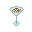 |
Alexander |
1 Cognac , 1 Creme de Cacao , 1 Cream |
A creamy, indulgent delight that is stronger than it seems. |
|
Allies Cocktail |
1 Classic Martini , 1 Vodka |
A drink made from your allies. |
|
Aloe |
1 Irish Cream , 1 Watermelon Juice |
Very, very, very good. |
|
Andalusia |
1 Rum , 1 Whiskey , 1 Lemon Juice |
A nice, strangely named drink. |
| 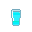 |
Anti-freeze |
2 Vodka , 1 Cream , 1 Ice |
The ultimate refreshment. |
| 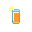 |
Arnold Palmer |
1 Tea , 1 Lemonade |
Encourages the patient to go golfing. |
| 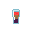 |
B-52 |
1 Irish Cream , 1 Kahlua , 1 Cognac |
Kahlua, Irish Cream, and cognac. You will get bombed. |
| 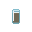 |
Bacchus' Blessing |
1 Hooch , 1 Absinthe , 1 The Manly Dorf , 1 Syndicate Bomb |
Unidentifiable mixture. Unmeasurably high alcohol content. |
| 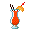 |
Bahama Mama |
2 Rum , 2 Orange Juice , 1 Lime Juice , 1 Ice |
Tropic cocktail. |
| 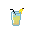 |
Banana Honk |
1 Laughter , 1 Cream |
A drink from Clown Heaven. |
| 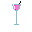 |
Barefoot |
1 Berry Juice , 1 Cream , 1 Vermouth |
Barefoot and pregnant. |
| 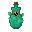 |
Bastion Bourbon |
1 Tea , 1 Creme de Menthe , 1 Triple Citrus , 1 Berry Juice |
Soothing hot herbal brew with restorative properties. Hints of citrus and berry flavors. |
|
Between the Sheets |
1 Rum , 4 Sidecar |
A provocatively named classic. |
|
Bilk |
1 Milk , 1 Beer |
A brew of milk and beer. For those alcoholics who fear osteoporosis. |
| 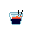 |
Black Russian |
3 Vodka , 2 Kahlua |
For the lactose-intolerant. Still as classy as a White Russian. |
| 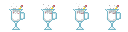 |
Blank Paper |
1 Silencer , 1 Nothing , 1 Nuka Cola |
A fizzy cocktail for those looking to start fresh. |
| 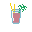 |
Bloody Mary |
1 Vodka , 2 Tomato Juice , 1 Lime Juice |
Tomato juice, mixed with Vodka and a lil' bit of lime. Tastes like liquid murder. |
| 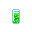 |
Booger |
1 Cream , 1 Banana Juice , 1 Rum , 1 Watermelon Juice |
Ewww... |
| 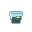 |
Branca Menta |
1 Fernet , 1 Creme de Menthe , 1 Ice |
A refreshing mixture of bitter Fernet with mint creme liquour. The closest you'll ever get to the original. |
|
Brave Bull |
2 Tequila , 1 Kahlua |
Tequila and Coffee liquor, brought together in a mouthwatering mixture. Drink up. |
| 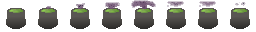 |
Bug Spray |
2 Triple Sec , 1 Lemon Lime , 2 Rum , 1 Vodka |
A harsh, acrid, bitter drink, for those who need something to brace themselves. |
| 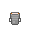 |
Cafe Latte |
1 Coffee , 1 Milk |
A nice, strong and refreshing beverage while you are reading. |
| 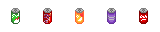 |
Changeling Sting |
1 Screwdriver , 2 Lemon Lime |
A stingy drink. |
| 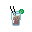 |
Cuba Libre |
3 Rum and Coke , 1 Lime Juice |
A classic mix of rum, cola, and lime. |
|
Driest Martini |
1 Nothing , 1 Gin |
Only for the experienced. You think you see sand floating in the glass. |
| 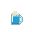 |
Drunken Blumpkin |
1 Blumpkin Juice , 2 Irish Cream , 1 Ice |
A weird mix of whiskey and blumpkin juice, with cream on top |
| 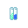 |
Duplex |
2 Hard Cider , 1 Apple Juice , 1 Berry Juice |
An inseparable combination of two fruity drinks. |
|
Erika Surprise |
1 Ale , 1 Lime Juice , 1 Whiskey , 1 Banana Juice , 1 Ice |
The surprise is, it's green! |
|
Fanciulli |
1 Manhattan , 1 Fernet |
What if the Manhattan coctail ACTUALLY used a bitter herb liquour? |
| 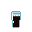 |
Fernet Cola |
1 Fernet , 1 Cola |
A very popular and bittersweet digestif, ideal after a heavy meal. Best served on a sawed-off cola bottle as per tradition. |
| 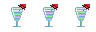 |
Pan-Galactic Gargle Blaster |
1 Vodka , 1 Gin , 1 Whiskey , 1 Cognac , 1 Lime Juice |
Does... does this mean that Arthur and Ford are on the station? Oh joy. |
| 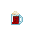 |
Gibb Floats |
5 Dr. Gibb , 5 Ice , 5 Cream |
Icecream on top of a Dr. Gibb glass. |
| 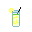 |
Gin Fizz |
2 Gin , 1 Soda Water , 1 Lime Juice |
Refreshingly lemony, deliciously dry. |
|
Gin and Tonic |
2 Gin , 1 Tonic Water |
A mild but still great cocktail. Drink up, like a true Englishman. |
|
Grape soda |
1 Grape Juice , 1 Soda Water |
Beloved of children and teetotalers. |
|
Grappa |
a Wine |
A fine Italian brandy, for when regular wine just isn't alcoholic enough for you. |
| 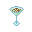 |
Grasshopper |
5 Cream , 5 Creme de Menthe , 5 Creme de Cacao |
A fresh and sweet dessert shooter. Difficult to look manly while drinking this. |
| 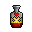 |
Hearty Punch |
5 Brave Bull , 5 Syndicate Bomb , 5 Absinthe |
Brave bull/syndicate bomb/absinthe mixture resulting in an energizing beverage. Mild alcohol content. |
| 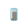 |
Iced Coffee |
1 Ice , 3 Coffee |
A drink to perk you up and refresh you! |
|
Iced Beer |
5 Beer , 1 Ice |
A beer so frosty, the air around it freezes. |
|
Iced Tea |
1 Ice , 3 Tea |
All natural, antioxidant-rich flavour sensation. |
| 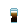 |
Irish Car Bomb |
1 Ale , 1 Irish Cream |
An Irish car bomb. |
| 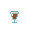 |
Irish Coffee |
1 Irish Cream , 1 Coffee |
Coffee and alcohol. More fun than a Mimosa to drink in the morning. |
| 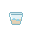 |
Irish Cream |
2 Whiskey , 1 Cream |
It's cream, mixed with whiskey. What else would you expect from the Irish? |
| 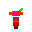 |
Jack Rose |
1 Grenadine , 2 Applejack , 1 Lime Juice |
A light cocktail perfect for sipping with a slice of pie. |
|
Kamikaze |
1 Vodka , 1 Triple Sec , 1 Lime Juice |
Divinely windy. |
| 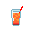 |
Long Island Iced Tea |
1 Vodka , 1 Gin , 1 Tequila , 1 Cuba Libre |
The liquor cabinet, brought together in a delicious mix. Intended for middle-aged alcoholic women only. |
|
Manhattan |
2 Whiskey , 1 Vermouth |
The Detective's undercover drink of choice. He never could stomach gin... |
| 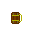 |
The Manly Dorf |
1 Beer , 2 Ale |
A manly concoction made from Ale and Beer. Intended for true men only. |
| 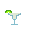 |
Margarita |
2 Tequila , 1 Lime Juice |
On the rocks with salt on the rim. ¡Arriba! |
|
Classic Martini |
2 Gin , 1 Vermouth |
Damn, the bartender even stirred it, not shook it. |
| 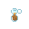 |
Old Timer |
3 Whiskey Soda , 2 Parsnip Juice , 1 Alexander |
An archaic potation enjoyed by old coots of all ages. |
| 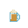 |
Pumpkin Latte |
5 Pumpkin Juice , 5 Coffee , 5 Cream |
A delicious mix of pumpkin juice and coffee. |
| 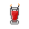 |
Quadruple Sec |
5 Triple Sec , 5 Triple Citrus , 5 Creme de Menthe |
Kicks just as hard as licking the powercell on a baton, but tastier. |
|
Rum and Coke |
2 Rum , 1 Cola |
The classic go-to of space-fratboys. |
| 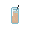 |
Screwdriver |
2 Vodka , 1 Orange Juice |
A simple, yet superb mixture of Vodka and orange juice. Just the thing for the tired engineer. |
|
Sidecar |
2 Cognac , 1 Triple Sec , 1 Lemon Juice |
The one ride you’ll gladly give up the wheel for. |
|
Snow White |
1 Beer , 1 Lemon Lime |
A cold refreshment. |
| 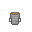 |
Soy Latte |
1 Coffee , 1 Soy Milk |
A nice and refreshing beverage while you are reading. |
| 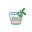 |
Stinger |
a Whiskey , 5 Creme de Menthe |
A snappy way to end the day. |
| 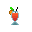 |
Suffering Bastard |
1 Gin , 1 Wine , 1 Lemon Juice , 2 Beer |
Some describe it as like consuming a lemon flavoured grenade, others say it can rip apart the very fabric of spess. What most people will tell you is that it tastes like liquid suffering. |
| 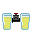 |
Syndicate Bomb |
1 Beer , 1 Whiskey Cola |
A syndicate bomb, also known as the JC |
| 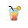 |
Tequila Sunrise |
2 Tequila , 2 Orange Juice , 1 Grenadine |
Oh great, now you feel nostalgic about sunrises back on Terra... |
| 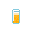 |
Thirteen Loko |
1 Vodka , 1 Coffee , 1 Lime Juice |
This is a glass of Thirteen Loko, it appears to be of the highest quality. The drink, not the glass. |
|
Triple Citrus |
1 Lemon Juice , 1 Lime Juice , 1 Orange Juice |
Triple the citrus, triple the fun. |
|
Vodka |
a Potato Juice |
The glass contain wodka. Xynta. |
|
Vodka Martini |
2 Vodka , 1 Vermouth |
A bastardisation of the classic martini. Still great. |
| 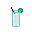 |
Vodka and Tonic |
2 Vodka , 1 Tonic Water |
For when a gin and tonic isn't russian enough. |
| 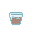 |
Whiskey Cola |
2 Whiskey , 1 Cola |
An innocent-looking mixture of cola and Whiskey. Delicious. |
| 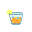 |
Whiskey Soda |
2 Whiskey , 1 Soda Water |
Ultimate refreshment. |
| 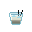 |
White Russian |
3 Black Russian , 2 Cream |
A very nice looking drink. But that's just, like, your opinion, man. |
|
Wine |
a Grape Juice |
A very classy looking drink. |
|
Wizz Fizz |
1 Triple Sec , 1 Soda Water , 1 Champagne |
A magical potion, fizzy and wild! However the taste, you will find, is quite mild. |